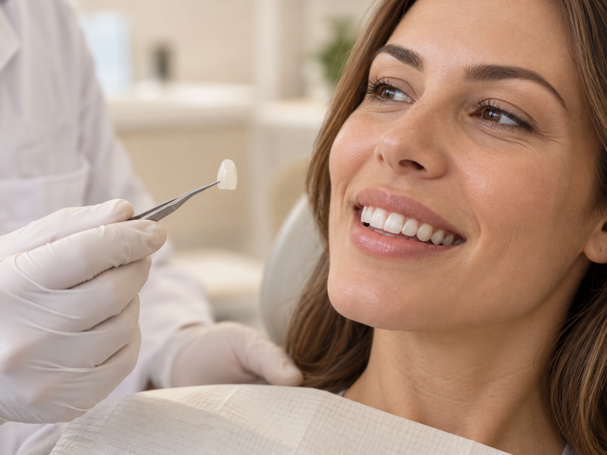
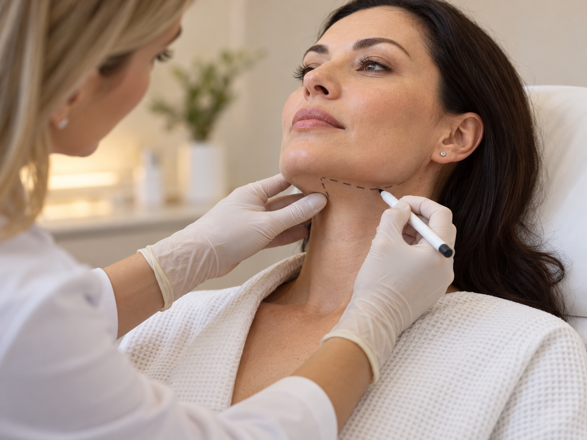
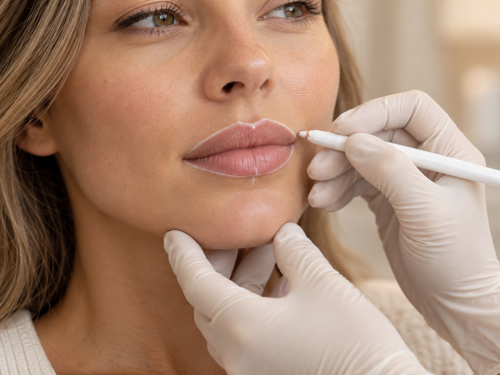
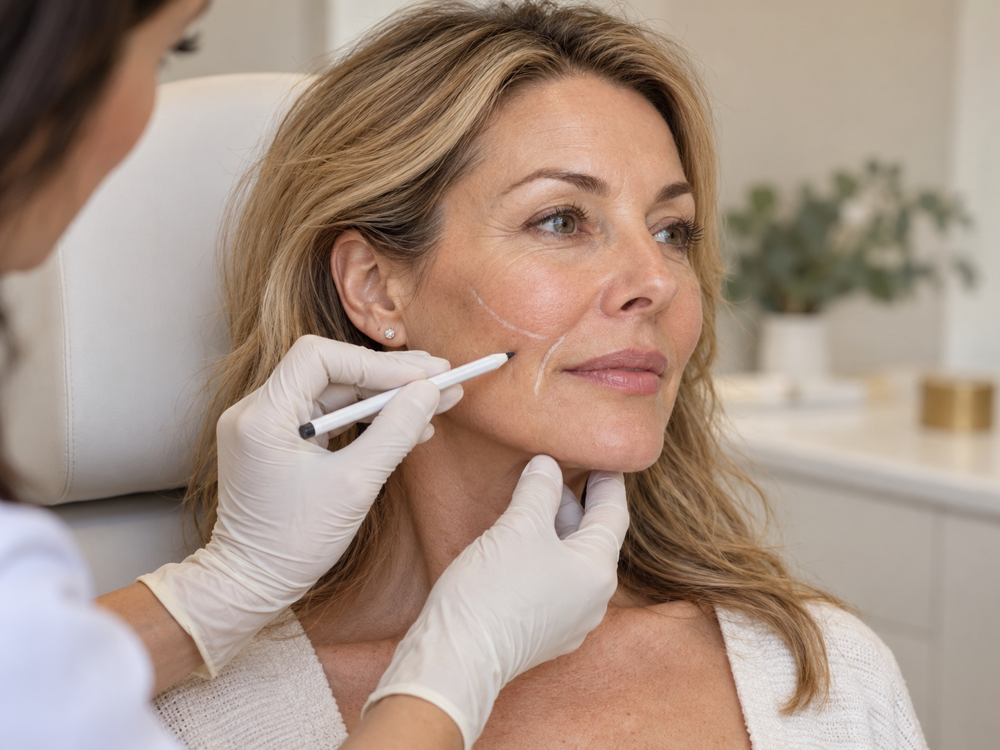

Odontologia
Tratamento ortodôntico
Um sorriso alinhado, com cuidado em cada etapa.
Conheça o tratamento →
Estética dental avançada e saúde bucal na Cidade Dutra. Tecnologia e atendimento humanizado para cuidar do seu sorriso e da sua autoestima.
Agendar minha avaliaçãoCidade Dutra, São Paulo
Seg. a sex. · 09h às 18h
 SEU SORRISO EM BOAS MÃOSDra. Bruna ZivoloCRO 125187 · Fundadora desde 2017↗CONHEÇA A BZ ↓
SEU SORRISO EM BOAS MÃOSDra. Bruna ZivoloCRO 125187 · Fundadora desde 2017↗CONHEÇA A BZ ↓Desde 2017, a Clínica BZ une estética dental e saúde bucal a um atendimento acolhedor, humanizado e focado no seu bem-estar.
Um cuidado próximo, que respeita a sua individualidade e começa com uma conversa.
Liderada pela Dra. Bruna Zivolo, com formação em Implantodontia, Ortodontia e Harmonização Orofacial.
Odontologia, estética e cuidado com a face.
Conheça todos os tratamentos →Um sorriso alinhado, com cuidado em cada etapa.
Conheça o tratamento →
Estética dental para valorizar o seu sorriso.
Conheça o tratamento →
Atenção à saúde, à função e à estética do sorriso.
Conheça o tratamento →
Um cuidado que une saúde bucal e autoestima.
Conheça o tratamento →


Harmonização com atenção à sua individualidade.
Conheça o tratamento →
Atenção aos detalhes e à harmonia dos lábios.
Conheça o tratamento →
Harmonia para diferentes regiões da face.
Conheça o tratamento →

Rejuvenescimento e sustentação facial.
Conheça o tratamento →

Procedimento cirúrgico com avaliação individual.
Conheça o tratamento →Agende sua avaliação.
Fale com a gente: (11) 5667-2168
Arraste para explorar
estes exemplos visuais.
Conheça os antes e depois dos nossos cuidados.
Conheça os profissionais que acompanham cada etapa do seu atendimento.
Experiência, atenção e um cuidado que começa com você.
CRO 125187Cirurgiã-dentista formada pela FMU. À frente da Clínica BZ desde 2017.
Conheça o profissional → CRO/SP 120991
CRO/SP 120991Especialista em cirurgia, com foco na harmonia e na anatomia da face.
Conheça o profissional →“Tive uma experiência excelente na clínica!”Ler avaliação no Google →
“Sou paciente desde 2020 e estou muito satisfeita”Ler avaliação no Google →
“a recepção bem atenciosa”Ler avaliação no Google →
Trechos de avaliações públicas. Nota e quantidade consultadas no Google em 14/10/2026.
Atendemos pelos convênios abaixo.
Consulte a cobertura do seu plano ao agendar.


As informações que você precisa
para dar o primeiro passo.
Você pode agendar pelo WhatsApp (11) 93063-9357 ou ligar para (11) 5667-2168. A equipe confirma a disponibilidade e orienta sua visita.
Estamos na Rua Nossa Sra. do Outeiro, nº 37, sobreloja, sala 2, no bairro Cidade Dutra, São Paulo – SP. CEP 04807-010.
Atendemos de segunda a sexta-feira, das 09h às 18h.
A clínica é liderada pela Dra. Bruna Zivolo (CRO 125187). Os procedimentos cirúrgicos são realizados em parceria com o Dr. André Mendes (CRO/SP 120991), especialista em Cirurgia Bucomaxilofacial.
Sim. Atendemos em português e o site da clínica informa suporte em inglês, japonês e espanhol. Converse com a equipe ao agendar.
A promoção publicada pela Clínica BZ oferece uma limpeza geral para quem realiza tratamento ortodôntico conosco. Consulte a equipe para confirmar as condições e a disponibilidade da promoção.
Um espaço acolhedor na Cidade Dutra,
feito para o seu sorriso e o seu bem-estar.
Nosso endereço para o seu próximo cuidado.
(11) 5667-2168Rua Nossa Sra. do Outeiro, 37